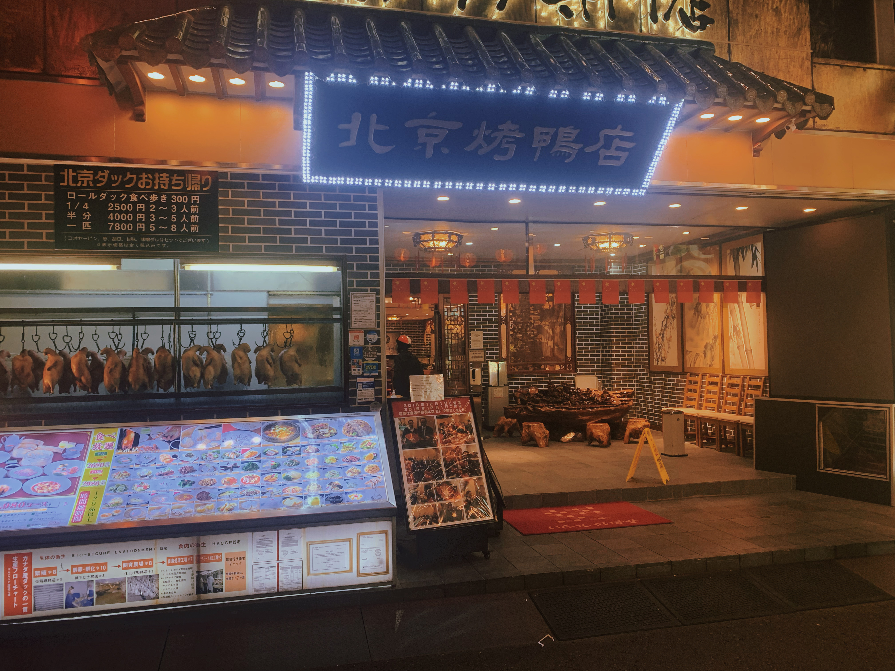
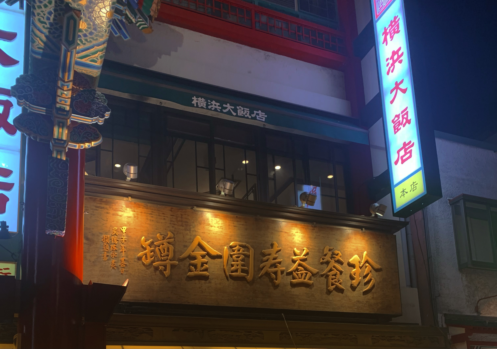

看板
中華街の店
揚州飯店
中国人として、この「揚州」という2漢字を一見すると、とある中国の名料理「揚州炒飯」とすぐ思い出すかもしれない。それに、この看板上に書道のような字体が書かれているので、かっこいい感じが出ていた。もっと近くメニューを見にいくと、チャーハンの売りだけではなく、たくさん種類の料理があります。
北京烤鸭店
北京ダック専門店である。自分で何回も食べた店であり、一見すると、最初は外見から普通な看板ではないかと思ったのに、実はダックが美味しい。食べ放題で時間制限なし、一人2980円である。

漢字読めない看板
その横浜大飯店ならすぐ読めるけど、下の店の名前は一体どうやって読めるのか本当に困っている。しかし、面白いので写真を撮った。
